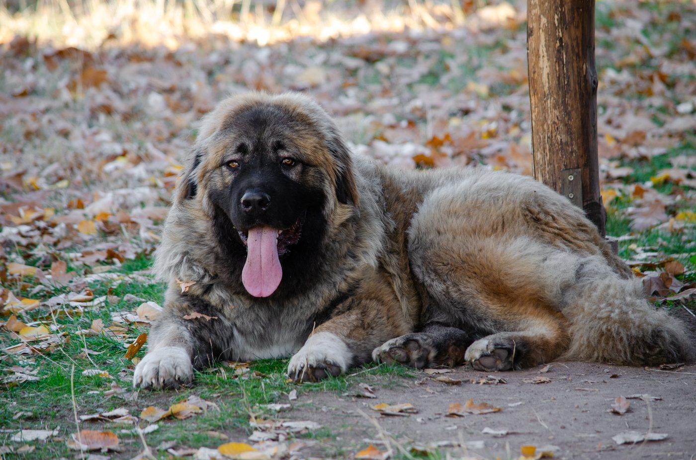

Въпросът, който чуваме първи
„Колко струва кученцето?“ Това е първото, което ни питат по телефона. Честният отговор е, че няма една цена. Две кученца от едно и също котило могат да струват различно и има защо.
Тук ще Ви разкажем как се образува цената на кавказката овчарка при нас и при всеки сериозен развъдник. Така ще можете сами да прецените дали една обява е добра сделка или капан.
Какво показват обявите в България
В сайтовете за обяви в България кученцата кавказка овчарка обикновено се предлагат между около 500 и 1300 €. Срещат се и обяви за „1 €“, но това е само начин обявата да излезе първа при търсене.
Разликата между 500 и 1300 € не е случайна. Зад нея стоят родителите, документите и грижата за кученцето през първите седмици.
1. Родителите и родословието

Най-важното за цената е от кого идва кученцето. Гледаме не само бащата и майката, а цялото родословно дърво: дядовците, бабите и техните предци. Колко са едри, какъв характер имат, какви титли са спечелили на изложби.
Кученце от родители шампиони, с добре известна линия зад тях, има много по-голям шанс да стане едро, красиво и уравновесено куче. Затова и струва повече. Нашите родители имат много титли от изложби, сред които BOB (най-добър от породата) и CAC, а развъдникът има над 200 купи за първо място.
2. Самото кученце
Дори в едно котило кученцата не са еднакви. Още от малки се вижда кое е най-едро, кое има най-силни кости, най-масивна глава и най-правилна постановка. Най-доброто кученце в котилото винаги струва най-много.
3. Кой избира пръв
Когато имаме котило, желаещите са много. Затова се спазва ред на избор:
- Първи избор: най-високата цена, защото този човек взима най-доброто, обикновено най-едрото кученце.
- Втори и трети избор: цената постепенно намалява.
- Стандартна цена: за останалите кученца. Тя зависи от линията и родословието.
Стандартната цена не означава по-лошо куче. Просто най-изявените кученца, които са за изложби, вече са избрани. Повечето хора и без това не търсят шампион за ринга, а приятел и пазач за дома. За това кученце от стандартния избор е напълно достатъчно.
4. Дефекти, които намаляват цената
Ако кученцето има отклонение от стандарта, цената е по-ниска. Колко по-ниска зависи от това колко сериозен е дефектът.
Сериозни дефекти: цената пада драстично. Обратната захапка и пречупената опашка са сериозни дефекти. Куче с такъв дефект се дисквалифицира от изложби, затова и цената му е много по-ниска.
По-леки дефекти: цената е по-ниска. Например проблеми с постановката на лапите. Те намаляват цената, но не толкова, колкото сериозните дефекти.
И в двата случая кучето може да бъде прекрасен пазач и член на семейството. Държим на висок стандарт, затова такива кученца при нас са рядкост. Но когато има, казваме го открито.
5. Мъжко или женско
Мъжките кавказки овчарки стават по-едри и по-масивни и повечето хора търсят мъжко. Затова женските обикновено са малко по-евтини. Женската обаче е също толкова добър пазач, а често е по-спокойна и по-лесна за възпитание.
Какво трябва да включва цената
Когато сравнявате цени, сравнявайте и какво получавате. При нас всяко кученце тръгва с:
- родословие FCI;
- ваксини според възрастта и обезпаразитяване;
- микрочип и европейски паспорт;
- съвети за хранене, отглеждане и възпитание;
- връзка с нас и след продажбата. Молим новите стопани да ни пращат снимки, за да следим как расте кученцето и да помагаме със съвети.
Ако в една обява липсва родословие или паспорт, по-ниската цена е само привидна. Без родословие не можете да докажете, че кучето е чистокръвно, нито да участвате на изложби.
Капаро и резервация
Ако сте харесали кученце, можете да го запазите с капаро. Така то остава за Вас, докато стане готово да тръгне към новия си дом. Ако още няма кученца, можете да се запишете за следващото котило. Колкото по-рано, толкова по-напред сте в реда на избор.
Кученца в чужбина
Наши кученца живеят в Гърция, Италия, Сърбия, Северна Македония, Румъния, Босна и Херцеговина, Англия, Украйна, Германия и дори в Индия. Все още нямаме собствен транспорт, затова пътуването е за сметка на купувача. По изключение, ако имаме възможност, можем да доставим кученцето лично, като всички транспортни разходи се поемат от купувача. Това се уговаря предварително.
Как да не попаднете на измама
- Проверете дали развъдникът е регистриран в БАБХ (Българската агенция по безопасност на храните). По закон развъдниците трябва да имат такава регистрация, но малко я имат: към ноември 2026 г. в цяла България има едва 134 регистрирани развъдника за кучета. Нашият е регистриран с № 4260-0913 и е единственият в община Асеновград.
- Винаги поискайте да видите майката на кученцето, а ако е възможно, и бащата.
- Поискайте родословието и паспорта, преди да платите. „Документите ще дойдат после“ е лош знак.
- Не превеждайте пари за кученце, което не сте видели, на човек, когото не познавате.
- Прекалено ниската цена за кавказка овчарка почти винаги крие нещо: болно кученце, кръстоска или липсващи документи.
Цената, разделена на годините
Кавказката овчарка живее средно 10–12 години. Разликата между евтиното и правилното кученце изглежда голяма в деня на покупката, но разделена на всичките години, в които кучето ще пази Вашия дом, е съвсем малка. Добрата основа (родители, здраве и правилно отглеждане) се връща многократно.
Искате да знаете повече за самата порода? Прочетете всичко за кавказката овчарка или вижте разликите между кавказка и средноазиатска овчарка.
Често задавани въпроси
Колко струва кученце кавказка овчарка в България?
В обявите в България кученцата обикновено се предлагат между около 500 и 1300 €. Цената зависи най-вече от родителите и родословието, от качеството на самото кученце, от реда на избор в котилото и от това дали има родословие FCI, ваксини, чип и паспорт.
Защо женските кученца са по-евтини?
Обикновено мъжките стават по-едри и по-масивни и затова повечето хора търсят мъжко. При нас женските са малко по-евтини от мъжките от същото котило, а качеството и документите им са същите.
Може ли да се запази кученце предварително?
Да. Кученцето се запазва с капаро. Колкото по-рано се запишете, толкова по-напред сте в реда на избор.
Продавате ли кученца в чужбина?
Да. Наши кученца живеят в Гърция, Италия, Сърбия, Северна Македония, Румъния, Босна и Херцеговина, Англия, Украйна, Германия и дори в Индия. Транспортът е за сметка на купувача. По изключение и при възможност можем да доставим кученцето лично, като всички транспортни разходи се поемат от купувача.
Защо някои кученца се продават много евтино?
Много ниската цена почти винаги означава, че липсват родословие, ваксини или паспорт или че родителите не са чистокръвни. Обявите с цена 1 € са само примамка. Поискайте да видите родителите и документите, преди да платите.